AGENTSQUARE: 모듈러 설계 공간에서의 자동 LLM 에이전트 검색
Shang Yu1∗ Li Yu2∗ Zhao Keyu1 Ma Likai1 Liu Jiahe1 Xu Fengli1† Li Yong1†
1전자공학과, 칭화대학
요약
최근 대형 언어 모델(Large Language Models, LLMs)의 발전으로 다양한 복잡한 작업을 처리할 수 있는 에이전트 시스템의 급속한 성장이 이루어졌다. 그러나 현재의 연구는 주로 수동적이고 작업별로 설계된 방식에 의존하여 새로운 작업에 대한 적응성을 제한하고 있다. 이 논문에서는 새로운 연구 문제인 모듈화된 LLM 에이전트 검색(Modularized LLM Agent Search, MoLAS)을 제안한다. 우리는 기존의 LLM 에이전트 설계를 네 가지 기본 모듈로 추상화하는 모듈화 설계 공간을 제안한다. 이 모듈들은 통일된 입출력 인터페이스를 가지며, 계획(Planning), 추론(Reasoning), 도구 사용(Tool Use), 메모리(Memory)로 구성된다. 이 설계 공간을 기반으로, 우리는 두 가지 핵심 메커니즘, 즉 모듈 진화(module evolution) 및 재조합(recombination) 을 도입한 새로운 LLM 에이전트 검색 프레임워크인 AgentSquare를 제시한다. 이를 통해 효율적으로 최적화된 LLM 에이전트를 탐색할 수 있다. 또한, 성능 예측기(performance predictor)를 설계하여, 맥락 내 대체 모델을 사용하여 성과가 낮을 것으로 예상되는 에이전트 설계를 건너뛰는 방식으로 프로세스를 더욱 가속화한다. 웹, 신체적(embodied), 도구 사용 및 게임 응용 분야를 포함하는 여섯 가지 벤치마크에서 실시된 광범위한 실험 결과, AgentSquare는 수작업으로 설계된 에이전트보다 상당히 우수한 성능을 보였으며, 최고 수준의 인간 설계 대비 평균 17.2%의 성능 향상을 달성하였다. 또한, AgentSquare는 해석 가능한 설계 통찰을 생성하여 에이전트 아키텍처와 작업 성능에 미치는 영향에 대한 깊은 이해를 가능하게 한다. 우리는 모듈화 설계 공간과 AgentSquare 검색 프레임워크가 이전에 성공한 설계의 잠재력을 완전히 활용하고 연구 공동체의 집단적 노력을 통합할 수 있는 플랫폼을 제공할 수 있다고 믿는다. 코드 리포지토리는 https://github.com/tsinghua-fib-lab/AgentSquare에서 확인할 수 있다.
1 도입
지난 몇 년간 대형 언어 모델(Large Language Models, LLMs)의 개발에서 놀라운 진전이 이루어졌으며 (Achiam et al., 2023; Touvron et al., 2023), 이로 인해 다양한 에이전트 시스템이 급속히 확산되고 있다 (Weng, 2023; Shen et al., 2024). 예를 들어, “사고의 사슬(chain-of-thought)” 프롬프팅은 LLM의 일반적인 추론 능력을 개방했으며 (Wei et al., 2022), 메모리 메커니즘은 인간의 행동을 시뮬레이션하는 데 효과적임이 입증되었다 (Park et al., 2023). 이러한 새로운 LLM 에이전트는 수학 문제 해결 (Romera-Paredes et al., 2024), 웹 탐색 (Nakano et al., 2021), 금융 조언 제공 (Ding et al., 2024a), 의료 결정 지원 (Li et al., 2024a)에 이르기까지 다양한 작업을 변환하는 놀라운 능력을 보여주었다. 따라서 에이전트 시스템의 설계는 다양한 후속 응용을 위해 LLM의 힘을 활용하는 데 중요한 역할을 한다.
그러나 현재의 연구는 주로 특정 작업에 맞춰 수동으로 설계된 에이전트 시스템에 의존하고 있으며, 이는 종종 전문가의 통찰력과 집중적인 인간 노동에 크게 의존한다. 또한 이러한 작업별 에이전트 설계는 새로운 작업에 적응하는 데 자주 어려움을 겪는다. 최근 몇몇 연구에서는 LLM을 사용하여 기존 에이전트의 프롬프트를 재작성하고 최적화하는 방식을 탐구하고 있다 (Fernando et al.,
2칭화대학 국제대학원, 선전캠퍼스
*동등한 기여
†상응 저자, 연락처: fenglixu@tsinghua.edu.cn, liyong07@tsinghua.edu.cn
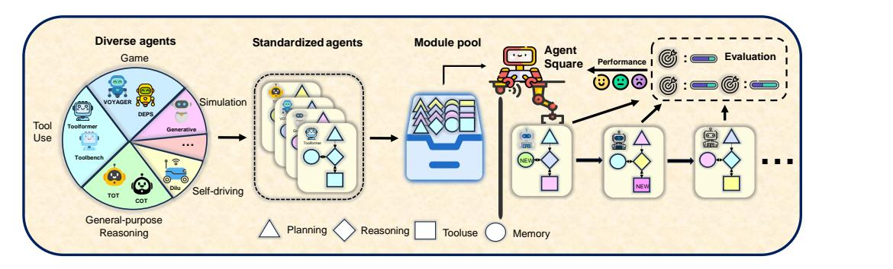
그림 1: AgentSquare는 LLM 에이전트를 설계하고 최적화하기 위한 모듈식 프레임워크입니다.
2024; 양 등, 2024. 최근 연구에서는 LLM을 활용하여 코드 공간에서 정의된 전체 에이전트 시스템을 탐색하는 아이디어를 도입하였다 후 등, 2024, 이로써 더 유연한 프롬프트, 제어 흐름 등을 갖는 에이전트를 발견할 수 있게 되었다. 그러나 이전의 접근법들은 서로 다른 연구에서 발견된 에이전트 모듈의 강점을 명시적으로 재조합하고, 별도의 코드베이스에 위치한 모듈들을 통합하는 능력이 제한적이다. 또 다른 연구 방향은 다중 에이전트 시스템의 구성 설정을 최적화하는 데 초점을 맞추고 있다 천 등, 2023; 원 등, 2024; 리 등, 2023; 주거 등, 2024; 왕 등, 2023b. 이러한 노력들은 에이전트 모듈의 설계보다는 다수의 에이전트 간의 역할 수행과 상호작용 패턴에 초점을 두기 때문에, 단일 에이전트 시스템의 최적화와는 정사각형이다.
이 논문은 새로운 연구 문제인 모듈화된 LLM 에이전트 탐색(MoLAS)을 다룬다. 목표는 출판되거나 평가된 모듈들의 경험을 활용하여 LLM 에이전트 설계를 자동으로 최적화하는 것이다. 따라서 본 연구의 핵심은 4개의 모듈 카테고리로 구성된 LLM 에이전트의 모듈화 설계 공간이다: 계획, 추론, 도구 사용, 메모리. 이 설계 공간은 기존 에이전트 시스템에 대한 철저한 문헌 검토에서 추출된 것이다(자세한 내용은 Section 2 참조). 중요한 점은, 우리의 목적이 가장 포괄적이고 일률적인 LLM 에이전트 설계 공간을 제안하는 것이 아니라, 모듈화 설계 공간이 연구자와 지능형 탐색 알고리즘들이 이전 성공적인 설계의 잠재력을 완전히 활용할 수 있도록 하는 것을 보여주는 데 있다는 점이다. MoLAS는 ADAS (Hu et al., 2024)에서 제안한 전체 코드 탐색의 하위 집합인 모듈화 설계 공간 내에서 유도되고 제약된 탐색 문제이다. 그러나 MoLAS는 에이전트 모듈에 대한 표준화된 IO 인터페이스를 제공하는 특징을 가지고 있어, 다양한 에이전트 시스템의 모듈을 쉽게 재조합할 수 있고, 따라서 새로운 에이전트를 효율적으로 탐색할 수 있다. 또한, 본 설계 공간은 매우 확장 가능하여 새로운 에이전트 시스템을 플러그인 모듈로 통합할 수 있다. 따라서 이는 LLM 에이전트 분야의 연구 공동체의 집단적 노력을 통합할 수 있는 플랫폼을 제공한다. 본 연구의 개요는 그림 1.에 설명되어 있다.
이 모듈러 설계 공간을 기반으로, 우리는 AgentSquare라는 새로운 LLM 에이전트 검색 프레임워크를 제안한다. 특히, AgentSquare는 모듈 진화와 재조합 메커니즘을 통해 LLM 에이전트를 최적화한다. 모듈 진화 메커니즘은 진화적 메타프롬프트를 활용하여 프롬프트 수준 최적화를 통해 새로운 모듈을 탐색하며, 이는 작업 설명, 기존 모듈, 그리고 평가된 모듈의 성능을 함께 모델링한다. 또한, 모듈 재조합 메커니즘은 LLM의 추론 능력을 활용하여 유망한 모듈 조합을 전략적으로 탐색함으로써 모듈 수준 최적화를 수행한다. LLM 에이전트의 비용이 많이 드는 평가 비용을 줄이기 위해, 우리는 성능 예측기를 도입하여 새로 제안된 LLM 에이전트에 대한 인컨텍스트 대체 모델을 구현함으로써, 성과가 낮은 후보를 건너뛰고 검색 과정을 크게 가속화할 수 있도록 한다.
우리는 웹, embodiment, 도구 사용 및 게임 시나리오에 걸쳐 다양한 사용 사례를 포함하는 여섯 가지 널리 채택된 벤치마크에서 포괄적인 평가를 수행합니다. 우리의 실험 결과에 따르면, AgentSqaure는 모든 여섯 가지 벤치마크에서 수작업으로 설계된 에이전트를 능가하는 새로운 LLM 에이전트를 발견할 수 있으며, 최고의 인간 설계 대비 평균 성능 향상률이 17.2%에 달합니다. 또한, AgentSqaure는 더 가파른 최적화 경로를 가지는 점에서 다른 탐색 알고리즘보다도 우수합니다. 더욱 중요한 것은, 사례 연구를 통해 AgentSquare가 새로 발견된 성능이 우수한 에이전트에 대해 인간이 이해할 수 있는 설계 통찰을 제공할 수 있다는 점입니다.
이 작업의 주요 기여점은 다음과 같습니다:
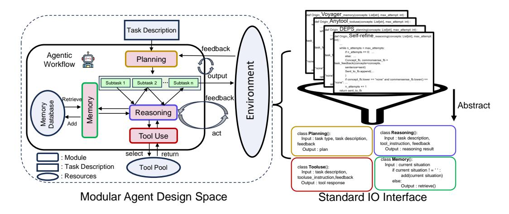
그림 2: 모듈형 에이전트 설계 공간과 에이전트 워크플로우(왼쪽) 및 네 가지 유형의 모듈의 표준화된 IO 인터페이스(오른쪽)의 도식도
우리는 LLM 에이전트를 위한 새로운 모듈형 설계 공간을 제안하며, 이는 연구자들이 이전의 성공적인 설계를 기반으로 쉽게 개발하고 공동체 차원에서 새로운 발견을 축적할 수 있도록 한다.
우리는 모듈 진화, 모듈 재조합, 성능 예측기라는 새로운 메커니즘을 통해 새로운 그리고 우수한 성능을 보이는 LLM 에이전트를 효율적으로 탐색하는 AgentSquare 프레임워크를 설계합니다.
여섯 가지 다양한 작업에서의 실험 결과, 우리의 방법은 기존 인간 설계보다 우수한 새로운 LLM 에이전트를 발견함을 보여준다. 또한, AgentSqaure는 이러한 새로운 에이전트에 대한 인간이 이해할 수 있는 설계 통찰을 생성할 수 있다.
2 모듈러 설계 공간: LLM 에이전트
2.1 배경
LLM을 사용한 자동 최적화는 코드 생성 (Lehman et al., 2023; Romera-Paredes et al., 2024) 및 신경망 아키텍처 검색 (Nasir et al., 2024; Chen et al., 2024a)와 같은 분야에서 널리 연구된 주제이다. 최근 몇몇 연구에서는 LLM에 프롬프트를 제공하여 LLM 에이전트 시스템을 설계하는 문제를 탐구하고 있다. OPRO (Yang et al., 2024)과 Promptbreeder (Fernando et al., 2024)은 LLM의 추론 능력을 활용하여 LLM 에이전트의 프롬프트를 개선하는 방식으로 볼 수 있다. 더욱 중요한 것은, ADAS가 코드 공간에서 정의된 전체 에이전트 시스템을 탐색하는 아이디어를 도입하고, 최신 인간 설계를 능가하는 LLM 에이전트를 발견하는 메타 에이전트 검색 알고리즘을 제안했다는 점이다 (Hu et al., 2024). 우리의 주요 차이점과 기여는 LLM 에이전트를 위한 모듈러 설계 공간을 도입한 데에 있다. 이는 기존에 성공한 에이전트 구성 요소의 편리한 재사용과 풍부한 혁신적 에이전트 모듈 발견을 지원하는 표준적인 프레임워크를 제공할 수 있다.
모듈화된 설계 공간은 LLM 에이전트의 이전 성공적인 설계 재사용을 촉진하고 새로운 아키텍처 탐색을 지원한다. 이러한 모듈화의 핵심은 입력-출력 인터페이스의 표준화로, 확장성과 기존 설계와의 원활한 통합을 보장한다. 분야의 많은 전문가들은 엔지니어링 (Weng, 2023)과 인지적 관점 (Sumers et al., 2023)에서 핵심 모듈 구성 요소를 활용하여 LLM 에이전트 시스템을 구축할 것을 제안했다. 그러나 이러한 제안들은 대부분 개념적 수준에 머물러 있으며, 기존 LLM 에이전트를 통합할 수 있는 구현 가능한 솔루션을 부족하다. 또한 현재의 LLM 워크플로우 프로그래밍 프레임워크(예: LangChain 및 Auto-GPT)는 작업 수준의 구성 요소만 제공하며, 이전 성공적인 설계의 잠재력을 최대한 활용할 수 있는 모듈 수준의 탐색을 지원하지 못한다.
문제를 해결하기 위해 최근 3년간 NeurIPS, ICML, ICLR에서 출판된 논문에 대한 포괄적인 문헌 검토를 수행합니다. 검토는 제목에 “LLM”, “Agent”, 또는 “Large Language Model”라는 키워드가 포함된 논문에 초점을 맞추며, 다중 에이전트 시스템 또는 추가 학습이 필요한 에이전트와 관련된 연구는 제외합니다. 우리의 목적은 가장 포괄적이고 일률적인 LLM 에이전트 설계 공간을 제안하는 것이 아니라, 기존 에이전트의 재조합을 가능하게 하고 새로운 에이전트 발견을 촉진하는 표준화된 프레임워크를 제공하는 것입니다. 결과적으로, 16개의 인기 있는 LLM 에이전트를 선별하고 1050개의 가능한 조합을 포함하는 모듈화된 설계 공간을 추출하였으며, 새로운 모듈이 발견될 때 쉽게 확장할 수 있습니다. 아래에서는 에이전트 워크플로우와 설계 공간 내 네 가지 모듈의 기능을 설명합니다.
2.2 워크플로우 개요
제안된 에이전트 워크플로우는 위의 네 가지 모듈 간의 상호 연결을 통해 반복적인 프로세스를 수행하며, 그 과정은 그림 2.에 나타나 있다. 태스크 d를 받은 후, 에이전트는 계획(Planning) 모듈을 시작하여 이를 n개의 하위 태스크 {s1, s2, …, sn}로 분해한다. 다음으로, 이 하위 태스크들은 순차적으로 이해(Reasoning) 모듈에 전달된다. 하위 태스크 si의 설명을 입력으로 받아, 이해 모듈은 LLM(대규모 언어 모델)에 프롬프트를 탐색하여 결과를 도출한다. 이해 과정에서 LLM의 내부 지식에 한계가 발생할 경우, 도구 사용(Tool Use) 모듈이 활성화되어 미리 정의된 도구 풀 τ에서 적절한 도구를 선택하여 문제 해결을 지원한다. 또한, 이해 과정은 메모리 데이터베이스 mem에서 필요한 관찰과 경험을 읽고 쓰는 메모리(Memory) 모듈에 접근하여 이해를 돕는다. 각 하위 태스크의 이해 결과는 행동으로 변환되어 에이전트가 외부 환경과 상호작용하도록 유도한다. 모든 하위 태스크가 완료되거나 이해 과정이 정체될 경우, 에이전트는 받은 피드백을 바탕으로 계획(Planning) 모듈을 활성화하여 계획을 조정한다. 에이전트는 이 시도와 오류의 반복 루프를 태스크 d가 완료되거나 설정된 최대 시도 횟수에 도달할 때까지 수행한다.
계획. 계획 모듈은 목표 작업을 더 작은 하위 작업으로 분해하는 역할을 한다. 작업 설명 d와 선택적 피드백 정보 f를 받고, 계획 모듈 P는 목표 작업을 하위 작업 시퀀스 {s1, s2, . . . , sn} = P(d, f)로 전략적으로 분해한다. 이러한 분해는 특히 MineCraft (Wang et al., 2024a;c)와 같은 개방형 환경에서의 에이전트에게 긴 기간 특성을 가진 매우 복잡한 작업을 처리하는 데 매우 중요하다.
이유. 대규모 언어 모델(LLM)은 CoT (Wei et al., 2022), ToT (Yao et al., 2024), 그리고 SoT (Shang et al., 2024)와 같은 고급 프롬프팅 접근 방식을 통해 놀라운 추론 능력을 보여주었으며, 이는 LLM 에이전트의 지능 기반을 형성하고 있다. 추론 모듈 R은 계획 후 각 하위 작업 si와 선택적 피드백 정보 fi를 입력으로 받아 순차적으로 하위 작업을 해결하며, 해답 ri = R(si, fi)을 출력한다.
도구 사용. 외부 도구를 사용하는 능력은 Shen et al., 2024; Schick et al., 2024 reasoning 과정 중 LLM의 내부 지식 한계를 극복한다. 공식적으로, 하위 작업 si의 추론 과정에서 유도된 문제 pij 와 사전 정의된 도구 풀 τ 가 주어졌을 때, 도구 사용 모듈 T는 문제를 해결하기 위해 가장 적합한 도구 tij 를 선택하며, 이를 tij = T(pij , τ )로 나타낸다. 여기서 tij ∈ τ 이다.
메모리. 메모리는 에이전트의 과거 사고, 행동 및 관찰을 저장하는 데 중요한 역할을 한다 (Park et al., 2023; Shinn et al., 2024). 추론 과정에서 이 내부 로그는 메모리 모듈 M에 의해 제어되는 메모리 데이터베이스 mem에 동적으로 쓰여지고 검색된다. 쓰기 과정은 mem = Mwrite(o, mem)으로 표현할 수 있으며, 여기서 o는 현재 관찰을 나타낸다. 검색 과정은 m = Mretrieve(o, mem)으로 표현되며, 여기서 m은 현재 상황과 관련된 검색된 지식을 나타낸다.
3 AGENTSQUARE 프레임워크
3.1 MOLAS의 문제 정식화
제안된 모듈형 설계 공간에서, LLM 에이전트 A는 계획 모듈 P, 추론 모듈 R, 도구 사용 모듈 T 및 기억 모듈 M의 조합으로 인스턴스화될 수 있으며, 이를 A = (P, R, T, M)로 표기한다. 작업 설명 d와 표준화된 IO 인터페이스를 갖는 모든 가능한 모듈 집합 {P, R, T, M}이 주어졌을 때, 우리는 모듈형 설계 공간 내에서 LLM 에이전트 아키텍처를 탐색하기 위한 최적화 문제를 정식화한다. 목표는 네 가지 설계 차원의 카르테시안 곱으로 정의된 해 공간에서 에이전트 성능을 최대화하는 최적의 모듈 조합을 식별하는 것이다. 작업의 성능 평가 함수를 Evald(·)로 정의하며, 구체적인 지표는 각각의 작업에서 다루는 바와 같이 부록 A.1.에서 논의된다. 최적화
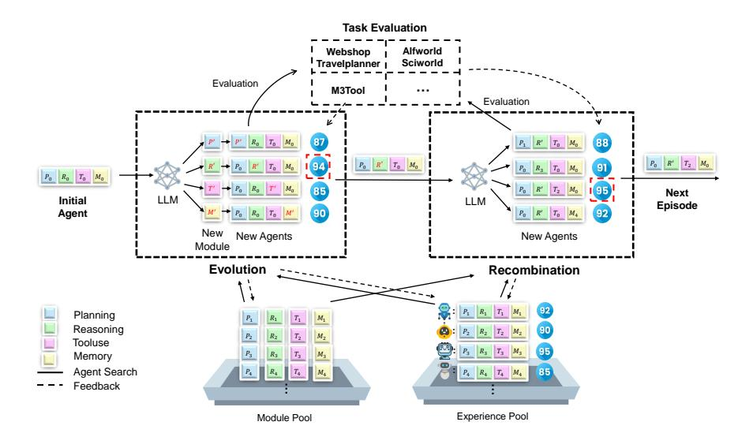
그림 3: AgentSquare 검색 프레임워크 개요. AgentSquare는 모듈 진화와 재조합 메커니즘을 통해 LLM 에이전트를 최적화한다. 또한 새로운 에이전트를 효율적으로 평가하기 위해 맥락 내 서브모델을 구현하는 성능 예측기를 도입한다.
MoLAS의 문제는 다음과 같이 정의된다:
\[ \underset{P \in \mathbb{P}, R \in \mathbb{R}, T \in \mathbb{T}, M \in \mathbb{M}}{\arg \max} Eval_d(P, R, T, M). \tag{1} \]
3.2 AGENTSQUARE 검색 알고리즘
모 LAS의 최적화 문제를 해결하는 데 세 가지 핵심 과제가 있다: (1) 네 개의 직교 모듈의 카르테시안 곱으로 정의된 탐색 공간이 방대하여 탐색하기 어렵다; (2) 모듈 세트는 표준 IO 인터페이스를 갖는 모든 코드를 포함하므로 모듈 선택이 개방형 문제이다; (3) 탐색 과정 중 에이전트 평가의 높은 비용으로 인해 전체 탐색 규모가 제한된다. 이러한 문제를 해결하기 위해, 우리는 모듈 설계 공간 내에서 LLM 에이전트를 최적화하기 위한 자동 탐색 프레임워크인 AgentSquare를 소개한다. MoLAS의 방대한 탐색 공간에 직면하여, 우리는 LLM을 활용한 모듈 재조합 연산을 제안하여 더 유망한 모듈 조합을 전략적으로 식별할 수 있도록 한다. 이 연산은 자식 샘플의 커버리지를 확대하여, 제한된 공간만 탐색하는 프롬프트 재작성 방법의 한계를 극복한다. 그러나 기존 모듈 조합 내에서만 탐색하는 것은 탐색 공간을 좁히므로, 우리는 코드 수준 최적화를 통해 새로운 모듈을 탐색하기 위한 진화적 메타프롬프트를 사용하는 모듈 진화 연산을 제안한다. 이 연산은 모듈 재조합과 함께 결합되어 개방형 솔루션 공간에서 어떤 모듈 조합이든 탐색할 수 있게 한다. 마지막으로, 탐색된 에이전트의 빈번한 평가 비용을 완화하기 위해, 우리는 탐색된 에이전트를 평가하기 위한 맥락 내 대체 모델로 성능 예측기를 설계하여 탐색 과정을 크게 가속화하고 실제 비용을 줄인다.
AgentSquare의 전체 프레임워크는 그림 3에 도식화되어 있으며, 알고리즘은 알고리즘 1에 제시되어 있다. 다음으로 AgentSquare 탐색 과정의 핵심 구성 요소를 상세히 설명한다.
3.3 초기화
기존 AutoML 연구의 통찰에 따르면, 적절한 초기화는 웜업을 향상시키고 비생산적인 집단을 피함으로써 탐색 효율성을 향상시킨다(So et al., 2019; Yuan et al., 2024). AgentSquare는 초기화를 통해 전역 경험 풀 \(\mathbb{E}=\{(P,R,T,M,v)|P_0\in\mathbb{P},R_0\in\mathbb{R},T_0\in\mathbb{T},M_0\in\mathbb{M}\}\) 을 생성하여, 2절에서 언급한 바와 같이 잘 설계된 에이전트와 그들의 실수값 성능 v를 시드로 설정한다. 모듈 풀 \(\{\mathbb{P},\mathbb{R},\mathbb{T},\mathbb{M}\}\) 은 이 시드 에이전트에서 추출된 표준화된 모듈로 설정된다.
3.4 모듈 재조합
모LAS의 방대한 솔루션 공간을 고려할 때, 프롬프트 재작성에만 의존하면 초기 상태의 이웃에 국한된 제한된 탐색에 그치게 된다. 탐색 공간을 확장하기 위해, 우리는 LLM을 자기적응형 제안자로 활용할 것을 제안한다. 이는 반복적으로 추론하여 초기 에이전트 구성보다 더 넓은 경험을 바탕으로 유망한 모듈 조합을 식별한다. 재조합 단계의 초기 에이전트를 \(A_r^0 = (P_0, R_0, T_0, M_0)\) 로 표기하며, 여기서 \(P_0 \in \mathbb{P}, R_0 \in \mathbb{R}, T_0 \in \mathbb{T}, M_0 \in \mathbb{M}\) 이다. 모듈 조합 제안자 LLM \(\pi_\theta\) 는 타겟팅된 작업 설명 d, 기존 모듈 풀 \(\{\mathbb{P}, \mathbb{R}, \mathbb{T}, \mathbb{M}\}\) 및 탐색된 모듈 조합의 성능 경험 \(\mathbb{E}\) 를 포함하여 유망한 새로운 에이전트 \(A_r\) 를 제안한다.
\[A_r = \pi_\theta((P_0, R_0, T_0, M_0), d, N, \mathbb{P}, \mathbb{R}, \mathbb{T}, \mathbb{M}, \mathbb{E}). \tag{2}\]
초기 에이전트 구성 \(A_r^0\)를 기반으로, LLM은 모듈 풀에서 선택한 대체 모듈로 \(A_r^0\)의 특정 모듈을 교체하여 N개의 자식 에이전트 \(\{A_r^1, A_r^2, ..., A_r^N\}\)를 제안합니다. 예를 들어, 가능한 해결책은 \((P_0, R', T_0, M_0)\)일 수 있으며, 여기서 \(R' \in \mathbb{R}\)는 모듈 풀에서 선택된 다른 추론 모듈입니다. 그런 다음 생성된 N개의 새로운 에이전트는 성능 예측기 \(\pi_p\) (세션 3.6 참조)를 통해 평가되며, 가장 좋은 에이전트가 다음 에피소드의 초기화로 사용됩니다.
3.5 모듈 진화
위에서 언급했듯이, 각 모듈 유형의 솔루션 공간은 표준화된 I/O 인터페이스를 가진 모든 코드를 허용하므로 개방형이다. 결과적으로 모듈 재조합만을 통해 탐색하면 솔루션 공간이 좁아지고 에이전트 성능의 상한이 제한된다. 이 문제를 해결하기 위해, 우리는 프로그램 수준 최적화를 통해 새로운 모듈을 탐색하기 위해 진화적 메타프롬프트를 사용하는 모듈 진화 연산을 설계한다. 이 설계는 FunSearch(Romera-Paredes et al., 2024)의 반복적 파이프라인에서 영감을 받았으며, 이는 기존 솔루션의 목표 문제와 성능 피드백을 기반으로 LLM에 새로운 솔루션을 제안하도록 유도한다. 이 개념을 바탕으로, 우리는 작업 설명, 기존 모듈, 그리고 이전에 평가된 모듈의 성능을 함께 모델링하여 모듈형 설계 공간에서 에이전트 탐색을 수행하는 모듈 프로그래밍 LLM \(\pi_{\mathcal{E}}\)를 도입한다. 참고로, 최적화 절차를 구현하기 위해 ADAS(Hu et al., 2024)의 일부 오픈소스 코드를 재사용한다. LLM을 사용하여 모듈형 에이전트 설계 공간에서 탐색하는 것은 여러 가지 매력적인 장점이 있다. LLM 에이전트의 제한 없는 설계 공간과 비교했을 때, 기능 모듈을 탐색하면 더 집중적이고 생산적인 탐색 공간을 생성할 수 있다. 또한, 기존에 성공한 모듈 설계를 표준 I/O로 인-컨텍스트 예시로 통합하면, LLM의 반성적 추론 능력을 더 잘 유도하여 이전의 핵심 설계를 식별하고 혁신적인 설계를 제안하는 데 도움을 줄 수 있다. 모듈 진화 단계의 초기 에이전트를 \(A_e^0 = (P_0^{'}, R_0^{'}, T_0^{'}, M_0^{'})\)로 표기하면, 모듈 프로그래밍 LLM은 \(A_e^0\)의 현재 모듈을 진화시켜 자식 에이전트의 집단을 생성한다. 공식적으로 모듈 진화 연산은 다음과 같이 표기된다:
\[A_{e} = \pi_{\xi}((P_{0}^{'}, R_{0}^{'}, T_{0}^{'}, M_{0}^{'}), d, N, \mathbb{P}, \mathbb{R}, \mathbb{T}, \mathbb{M}, \mathbb{E}). \tag{3}\]
새로 생성된 모듈들은 표준화된 모듈 풀 \(\{\mathbb{P}, \mathbb{R}, \mathbb{T}, \mathbb{M}\}\) 에 추가되며, 각 모듈은 초기 에이전트를 개별적으로 변이시켜 N개의 자식 에이전트 \(\{A_e^1, A_e^2, ..., A_e^N\}\) 를 생성합니다. 예를 들어, \((P^*, R_0, T_0, M_0)\) 는 계획 모듈이 새로운 변형 \(P^*\) 로 변이된 해를 나타냅니다. 이 자식 에이전트들은 실시간 테스트를 거쳐 역사적 경험 풀 \(\mathbb{E}\) 에 업데이트됩니다. 최고 성능을 보인 에이전트가 후속 재조합 단계의 초기 에이전트로 선택됩니다.
3.6 성능 예측기
최종적인 자동 에이전트 검색의 과제는 각 후보 에이전트 평가 과정에서 발생하는 높은 API 비용이다. 많은 에이전트 작업은 다중 단계를 필요로 하며, 상당한 입력 및 출력 토큰을 포함하므로 평가 비용이 막대해진다. 예를 들어, GPT-40 기반의 단순한 CoT 에이전트를 ALFWorld(Shridhar 등, 2021)에서 평가하는 데 약 60달러가 소요되며, 이는 대규모로 에이전트 검색을 경제적으로 지속 가능하지 않게 만든다. 이 문제를 해결하기 위해, 우리는 성능 예측자로 추가적인 LLM \(\pi_p\)를 도입하여 새로운 에이전트 평가를 위한 맥락 내 대체 모델로 활용하는 방안을 제안한다. 이를 통해 비성공적인 후보를 제외하고 검색 과정을 크게 가속화할 수 있다. 실제 환경 평가에 비해, 이러한 맥락 내 대체 모델은 훨씬 적은 토큰을 필요로 하므로 비용 효율적이며, 더 대규모의 검색을 가능하게 한다. 비슷한 접근법은 신경망 구조 검색(NAS)에서 효과적으로 적용된 바 있으며, LLM이
| 웹 | 엠보 | 데드 | 투 | 올 | 게임 | ||
|---|---|---|---|---|---|---|---|
| 베이스라인 유형 | 방법 | 웹숍 | ALF월드 | 사이언스월드 | M3툴 | 트래블 | PDDL |
| CoT | 0.485 | 0.405 | 0.697 | 0.448 | 0.487 | 0.542 | |
| Cot-SC | 0.512 | 0.426 | 0.656 | 0.461 | 0.413 | 0.495 | |
| 셀프리파인드 | 0.461 | 0.567 | 0.654 | 0.442 | 0.000 | 0.514 | |
| ToT | 0.501 | 0.437 | 0.741 | 0.453 | 0.380 | 0.476 | |
| 스텝백 | 0.468 | 0.279 | 0.220 | 0.434 | 0.000 | 0.486 | |
| TP | 0.398 | 0.404 | 0.576 | 0.387 | 0.430 | 0.518 | |
| 수동으로 작성된 에이전트 | 허깅지피티 | 0.519 | 0.481 | 0.680 | 0.354 | 0.510 | 0.584 |
| 보이저 | 0.366 | 0.425 | 0.776 | 0.247 | 0.523 | 0.412 | |
| 생성형 에이전트 | 0.499 | 0.477 | 0.663 | 0.402 | 0.480 | 0.553 | |
| DEPS | 0.481 | 0.459 | 0.740 | 0.278 | 0.540 | 0.591 | |
| OPENAGI | 0.506 | 0.510 | 0.718 | 0.322 | 0.533 | 0.616 | |
| 딜루 | 0.451 | 0.433 | 0.682 | 0.475 | 0.360 | 0.463 | |
| 모듈 검색 | 랜덤 | 0.533 | 0.620 | 0.704 | 0.438 | 0.563 | 0.660 |
| 모듈 검색 | 베이지안 | 0.549 | 0.634 | 0.749 | 0.502 | 0.537 | 0.650 |
| 프롬프트 검색 | OPRO | 0.505 | 0.380 | 0.569 | 0.309 | 0.523 | 0.589 |
| 에이전트 검색 | ADAS | 0.521 | 0.543 | 0.754 | 0.475 | 0.373 | 0.568 |
| 에이전트스퀘어 | 0.607 | 0.695 | 0.781 | 0.524 | 0.583 | 0.669 |
표 1: AgentSquare에서 검색한 에이전트와 (1) 기존 인간 설계 에이전트, (2) 모듈 검색 기반, (3) 프롬프트 검색 기반, (4) GPT-40 기반 에이전트 검색 기반의 여섯 가지 작업에서 다양한 도메인에 걸쳐 성능 비교
성능을 평가하는 데 활용되었다(자와르 등, 2023; 첸 등, 2024a).
검색 과정에서 모듈 진화를 통해 새로 생성된 에이전트는 경험 풀에 등장하지 않기 때문에 실제 작업 환경에서 여전히 테스트됩니다. 또한 성능 예측기(preference predictor)를 사용하여 예측하는 것은 부적절합니다. 모듈 재조합 작업 중에 새로 제안된 에이전트는 성능 예측기 \(\pi_p\)에 의해 평가되며, 이는 과거 에이전트 조합의 성능 예시를 기반으로 한 인-컨텍스트 추론(in-context reasoning)을 활용하여 효율적인 성능 예측을 제공합니다. 여기서 새로 검색된 에이전트 A’가 주어졌을 때, 성능 예측기는 태스크 설명 d, 모듈 프로파일, 그리고 이전에 테스트된 에이전트들의 인-컨텍스트 성능 예시 \(\mathbb E\)를 종합적으로 고려하여 새로운 에이전트에 점수를 부여합니다.
\[v' = \pi_p(A', d, \mathbb{P}, \mathbb{R}, \mathbb{T}, \mathbb{M}, \mathbb{E}), \tag{4}\]
여기서 v’은 평가된 에이전트의 예측 성능을 나타낸다. 실험 결과는 에이전트의 예측 성능이 실제 성능과 밀접하게 일치함을 보여주며, 이는 제안된 성능 예측기의 유효성을 검증하는 것이다. 이에 대한 자세한 내용은 4.3절에서 다룬다.
4 실험
4.1 실험 설정
작업 설정. 우리는 기존 LLM 에이전트 벤치마크에서 널리 채택된 네 가지 도메인: embodiment( embodiment), 게임, 웹 및 도구 응용 분야를 포함하는 여섯 가지 대표적인 작업에서 실험을 수행한다 (Ma 등, 2024; Xi 등, 2024). 자세한 내용은 부록 A.1에 제시되어 있다.
베이스라인. AgentSquare은 수작업으로 제작된 에이전트, 모듈 수준 검색, 프롬프트 수준 검색 및 에이전트 검색 방법을 포함한 네 가지 유형의 베이스라인과 비교한다. 자세한 내용은 부록 A.1을 참조하라.
AgentSquare 설정. 우리는 AgentSquare를 구현하고 GPT-3.5-turbo-0125 및 GPT-40(Achiam 등, 2023)을 사용하여 실험을 수행한다. 공정한 비교를 위해 모든 방법에서 동일한 수의 소량 샘플 예제를 사용한다. 초기 에이전트는 무작위 모듈 조합으로 설정되며, 성능 향상이 5회 연속으로 발생하지 않으면 검색 과정이 종료된다.
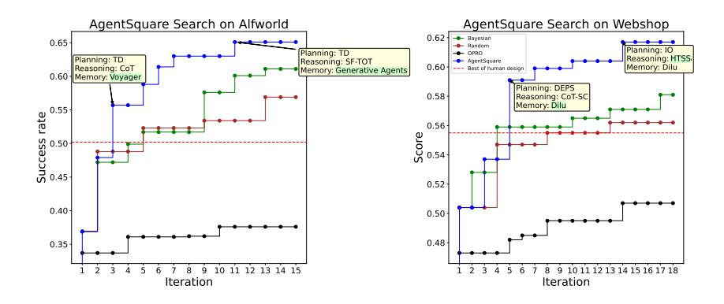
그림 4: AgentSquare의 Alfworld 및 Webshop에서의 탐색 경로
4.2 실험 결과
주요 결과. 우리는 6개의 작업에서 세 가지 유형의 베이스라인과 비교하기 위해 광범위한 실험을 수행하며, Table 1에 GPT-40 기반 결과를, Table A.3에 GPT-3.5 기반 결과를 제시한다. 또한 에이전트의 API 비용을 평가하고 Figure A.7부터 Figure A.12까지의 성능-비용 비교를 제공한다. 이 결과를 통해 다음과 같은 관찰을 얻었다:
AgentSquare는 인간이 설계한 에이전트보다 더 나은 에이전트를 효과적으로 발견할 수 있다. 여섯 가지 대표적인 에이전트 작업에서 AgentSquare가 검색한 최고의 에이전트는 성능 측면에서 인간이 설계한 에이전트보다 일관되게 우수하다. 구체적으로 Table 1과 Table A.3에 보여진 바와 같이, 최고의 인간 설계 에이전트와 비교했을 때, AgentSquare는 Webshop에서 평균 14.1%의 성능 향상, ALFWorld에서 26.1%의 향상, SciWorld에서 20.5%의 향상, M3Tool에서 30.6%의 향상, Travelplanner에서 6.0%의 향상, PDDL에서 6.0%의 향상을 달성한다. 동시에 AgentSquare의 최고 에이전트는 일반적으로 비용 효율적이며, Figure A.7~Figure A.12에서 볼 수 있듯이 비교 대상 모든 에이전트 중 최고의 성능-비용 거래를 달성한다. 검색 비용은 일회성 지출이므로 위 분석에는 포함되지 않으며, Table A.6에 별도로 나열되어 있다.
AgentSquare는 LLM 에이전트 최적화를 위한 더 효율적인 검색 방식을 제공합니다. AgentSquare의 검색 효과를 더욱 명확히 보이기 위해, 모듈 검색, 프롬프트 검색, 에이전트 검색의 세 가지 검색 방법을 비교합니다. 이 검색 방법들 중 최고의 에이전트와 비교했을 때, AgentSquare는 Webshop에서 평균 8.4%의 성능 향상을, ALFWorld에서 8.1%의 향상을, SciWorld에서 11.0%의 향상을, M3Tool에서 12.8%의 향상을, Travelplanner에서 2.5%의 향상을, PDDL에서 1.4%의 향상을 달성합니다. 검색 기반 방법의 비교는 공정성을 확보하기 위해 고정된 LLM 토큰 예산을 기준으로 수행되며, 동일한 검색 반복 횟수를 유지합니다. 원칙적으로 ADAS는 전체 코드 공간에서 검색함으로써 더 정교한 에이전트를 발견할 가능성을 지니지만, 이를 달성하기 위해 더 많은 반복(즉, 더 높은 LLM 토큰 사용량)이 필요할 수 있습니다.
AgentSquare에서의 탐색 경로. Figure 4는 GPT-40 기반 AgentSquare과 ALFWorld 및 Webhop 작업에서의 다른 탐색 방법을 사용한 15회 반복 하에서의 탐색 경로를 보여준다. 다른 작업에 대한 결과는 Figure A.13과 A.14에 제시되어 있다. AgentSquare는 지속적인 수렴 경로를 보여주며, 더 고급화된 에이전트들이 탐색 과정에서 지속적으로 등장한다. 반면, 무작위 및 베이지안 탐색을 포함한 모듈 수준 탐색 방법들은 명확하고 통찰력 있는 탐색 방향을 갖지 못한다. OPRO와 같은 프롬프트 수준 탐색 방법들은 제한된 수정 공간에 제약을 받아 성능 향상이 미미하다. 결과적으로, 이들은 탐색 과정에서 성능 병목 현상을 겪으며, 최적의 에이전트 구조를 도출하지 못한다. 또한, 무작위 재조합과 같은 간단한 모듈 수준 탐색 방법이 프롬프트 수준 탐색보다 훨씬 뛰어난 성능을 보여주며, 모듈 설계 공간에서의 탐색의 중요성을 시사한다.
4.3 AGENTSQUARE의 제거 연구
모듈 진화와 재조합의 효과성. AgentSquare의 검색 프레임워크에는 두 가지 핵심 작업이 있다: 모듈 진화(modul evolution)는 새로운 모듈을 생성하고, 모듈 재조합(modul recombination)은 기존 모듈을 조합하여 새로운 모듈을 만드는 것이다.
| 방법 | 웹숍 | ALF월드 | 사이언스월드 | M3툴 | 여행플래너 | PDDL |
|---|---|---|---|---|---|---|
| AgentSquare (전체) | 0.607 | 0.695 | 0.781 | 0.524 | 0.583 | 0.669 |
| 모듈 진화 없음 | 0.564 | 0.649 | 0.736 | 0.502 | 0.577 | 0.614 |
| 모듈 재조합 없음 | 0.560 | 0.616 | 0.710 | 0.481 | 0.280 | 0.669 |
표 2: 다양한 도메인의 여섯 가지 작업에서 AgentSquare의 GPT-40에 대한 제거 연구
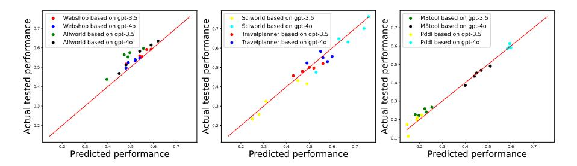
그림 5: 각 작업에서 성능 예측기의 유효성 검증(실제 성능과 예측 성능 간의 상관관계)
조합을 전략적으로 재조합하는 방식입니다. 각 설계의 효과를 확인하기 위해 세 가지 변형을 테스트했습니다: 전체 모델, 모듈 진화가 없는 버전, 그리고 모듈 재조합이 없는 버전입니다. 결과는 각각 GPT-40과 GPT-3.5를 기반으로 Table 2와 Table A.5에 제시되어 있습니다. 각 설계를 제거하면 성능이 뚜렷하게 하락하는 것을 볼 수 있으며, 모듈 재조합이 더 큰 영향을 미칩니다. 모듈 재조합은 검색 공간을 크게 확장하여 국소 최적값에 빠질 위험을 줄입니다. 한편, 모듈 진화는 특정 작업에 맞춰 더 고급 모듈을 발견하는 데 도움을 줍니다. 이 두 작업은 잘 협력하여 AgentSquare의 검색 과정의 효과를 보장합니다.
성능 예측기의 효과성. 이 부분에서는 이 설계의 효과성을 경험적으로 검증한다. 그림 5는 GPT-3.5와 GPT-40을 모두 사용하여 모든 여섯 작업에서 주어진 에이전트의 예측 성능과 실제 테스트 성능을 보여준다. 테스트된 에이전트는 기존 모듈을 무작위로 조합하여 무작위 샘플링을 통해 생성되었다. 예측 성능이 실제 성능과 밀접하게 일치하는 것을 확인할 수 있으며, 이는 성능 예측기의 효과성을 입증한다. 예를 들어, 예측기의 평가 비용은 ALFWorld에서 GPT-40 기반의 전체 평가 비용의 약 0.025%에 불과하여 놀라운 비용 효율성을 보여준다. 동적으로 검색된 에이전트의 성능 예측에 대한 추가 실험 결과는 부록의 그림 A.15에서 제공된다.
4.4 AGENTSQUARE에서 발견된 최고의 에이전트
이 섹션에서는 검색된 최고의 에이전트 예시를 제공하며, 특히 발견된 유망한 모듈들을 소개합니다. 표 A.4는 AgentSquare에서 검색한 최고의 에이전트와 모든 작업에서 최고의 수작업 에이전트를 요약합니다. AgentSquare가 주어진 작업에 맞춰 기존 모듈과 새로 프로그래밍된 모듈을 적응적으로 식별할 수 있음을 관찰할 수 있습니다. 예를 들어, ALFWorld의 발견된 최고 에이전트는 Generative Agents에서 기존에 잘 설계된 메모리 모듈과 새로 생성된 계획 모듈(TD라고 명명됨) 및 추론 모듈(SF-ToT라고 명명됨)을 결합합니다. 반면, 최고의 수작업 에이전트인 Self-refine은 추론 모듈 설계에만 집중하면서 다른 기능 모듈을 간과하여 최적의 성능을 달성하지 못합니다. 또한, Figure 6에서는 ALFWorld에서 발견된 두 가지 새로운 모듈과 인간이 이해할 수 있는 설계 통찰을 보여줍니다. 더 많은 예시는 Figure A.16부터 Figure A.21까지 나열되어 있습니다.
5 관련 연구
5.1 LLM 기반 자율 에이전트
LLM 기반 자율 에이전트는 핵심 LLM을 사용하여 외부 기능 모듈을 관리하고 세계와 상호작용하는 고급 AI 시스템이다(Ding 등, 2024b). 최근 연구에서는
그림 6: ALFWorld에서 AgentSquare 검색을 통해 발견된 새로운 모듈
LLM 에이전트는 계획(하오 등, 2023; 쩡 등, 2024; 샤오 등, 2025), 추론(웨이 등, 2022; 야오 등, 2024; 샹 등, 2024; 쉬 등, 2025), 도구 사용(신 등, 2024; 슈익 등, 2024), 그리고 메모리 모니터링(왕 등, 2024a; 파크 등, 2023)과 같은 여러 LLM 중심 기능 모듈을 포함하여, LLM 에이전트의 기능을 크게 향상시킨다. 단일 에이전트의 개선과 함께, 개별 에이전트를 전략적으로 구성하여 시뮬레이션(리 등, 2023; 첸 등, 2023) 및 목표 작업 해결(첸 등, 2024b; 리 등, 2024b)을 수행하기 위해 더 고급 다중 에이전트 시스템을 구축하려는 또 다른 연구 방향이 존재한다. 점점 더 정교해지는 에이전트의 출현은 놀라운 성능 향상을 가져오지만, 그들의 아키텍처와 코드베이스는 서로 크게 다르다. 개별 연구 간에 통일된 설계 공간과 일관된 용어가 부족하기 때문에, 다양한 에이전트를 비교하고, 그 진화 경로를 이해하며, 새로운 에이전트 설계 방향을 안내하기가 어렵다.
5.2 LLM 기반 에이전트의 자동 설계
LLM 기반 에이전트 시스템은 가장 진보된 AI 시스템이지만, 아직 통합된 설계 공간과 자동 설계 방법을 형성하지 못하고 있다. LangChain*와 BabyAGI†과 같은 엔지니어링 중심의 오픈 소스 자원은 LLM 중심의 에이전트 시스템을 구축하는 데 편리한 방법을 제공하지만, 여전히 다양한 모듈을 구성하기 위해 인간의 참여가 필요하며 설계된 에이전트의 최적화를 지원하지 못한다. 또한, CoALA(Sumers 등, 2023)와 같은 개념적 프레임워크가 LLM 에이전트의 통합 설계 원칙을 제공하려는 시도를 하고 있다. 그러나 이는 미래에 LLM 에이전트가 어떻게 되어야 하는지에 대한 비전일 뿐, 실용적인 설계 프레임워크를 제공하지는 않는다. 더 중요한 것은, 다양한 검색 공간에서 정의된 LLM 에이전트 시스템의 설계를 자동화(적어도 일부)하는 문제를 탐구하는 최근 연구들이 있다는 점이다. OPRO(Yang 등, 2024)와 Promptbreeder(Fernando 등, 2024)는 프롬프트 공간에서 정의된 LLM 에이전트를 최적화하는 데 LLM을 사용하는 것으로 간주될 수 있다. 더 관련성이 높은 것은 ADAS(Hu 등, 2024)가 코드 공간에서 정의된 전체 에이전트 시스템을 탐색하려는 것을 제안하여, 더 유연한 프롬프트, 도구 사용, 제어 흐름 등을 갖는 LLM 에이전트를 탐색할 수 있게 한다.
6 결론
이 작업에서는 연구자들이 이전 성공적인 설계를 기반으로 구축하고 공동으로 새로운 통찰을 축적할 수 있는 새로운 모듈형 디자인 공간을 소개합니다. 이를 바탕으로, 이전에 출판되거나 평가된 모듈에서 얻은 지식을 활용하여 LLM 에이전트 설계를 자동으로 최적화하는 것을 목표로 하는 새로운 연구 문제인 모듈화된 LLM 에이전트 검색(Modularized LLM Agent Search, MoLAS)을 제안합니다. 방대한 검색 공간의 도전 과제를 해결하기 위해, 모듈 진화와 재조합을 통해 LLM 에이전트를 최적화하는 자동 검색 프레임워크인 AgentSquare를 제시합니다. 또한 새로운 LLM 에이전트를 평가하기 위한 맥락 내 대리 모델로 성능 예측기를 도입하여 검색 과정을 가속화합니다. 전반적으로, 본 연구는 개별 LLM 에이전트 설계를 연구하는 방식에서 모듈형 디자인 공간 내의 LLM 에이전트를 연구하는 방식으로의 전환을 제공하며, 연구 공동체의 집단적 노력을 더욱 강화합니다.
*https://github.com/langchain-ai/langchain †https://github.com/yoheinakajima/babyagi
참고문헌
Josh Achiam, Steven Adler, Sandhini Agarwal, Lama Ahmad, Ilge Akkaya, Florencia Leoni Aleman, Diogo Almeida, Janko Altenschmidt, Sam Altman, Shyamal Anadkat, 등. Gpt-4 기술 보고서. arXiv preprint arXiv:2303.08774, 2023.
엔젤리카 첸, 데이비드 도한, 데이비드 소. 에보프롬프팅: 코드 수준 신경망 아키텍처 검색을 위한 언어 모델. 신경정보처리시스템 학술대회 논문집, 36, 2024a.
린 첸, 펑리 쉬, 니안 리, 젠위 한, 맹 왕, 용 리, 팬 후이. 대규모 언어 모델 기반 이질 정보 네트워크 내 메타 구조 탐색. 제30회 ACM SIGKDD 지식 발견 및 데이터 마이닝 회의 논문집, pp. 307–318, 2024b.
Weize Chen, Yusheng Su, Jingwei Zuo, Cheng Yang, Chenfei Yuan, Chi-Min Chan, Heyang Yu, Yaxi Lu, Yi-Hsin Hung, Chen Qian, 등. Agentverse: 다중 에이전트 협업을 촉진하고 잠재적 행동을 탐색하기 위한 연구. 제12회 국제 학습 표현 학회, 2023.
한 딩, 이 은형, 왕 준하오, 천 항. 대규모 언어 모델 에이전트를 활용한 금융 거래: 조사. arXiv preprint arXiv:2408.06361, 2024a.
정타오 딩, 윤케 장, 유 상, 우형 장, 제팡 종, 제 펑, 원 원, 홍위안 수, 니안 리, 니컬러스 슈키엔닉, 등. 세계 모델을 이해하는 것 vs 미래를 예측하는 것? 세계 모델에 대한 포괄적인 조사. arXiv preprint arXiv:2411.14499, 2024b.
크리산타 페르난도, 다이엘 선일 바나르세, 헨리크 미하엘레프스키, 사이먼 오신데로, 그리고 팀 록타셸. 프롬프트브리더: 프롬프트 진화를 통한 자기참조적 자기개선. 제41회 국제 기계학습 회의, 2024.
Yingqiang Ge, Wenyue Hua, Kai Mei, Juntao Tan, Shuyuan Xu, Zelong Li, Yongfeng Zhang, 등. Openagi: LLM이 도메인 전문가와 만날 때. Neural Information Processing Systems의 발전, 36, 2024.
하오 시보, 구 이, 마 하오디, 홍 자쉬, 왕 젠, 왕 데이지, 후 지팅. 언어 모델을 통한 추론은 세계 모델을 통한 계획이다. 2023년 자연어 처리 실험적 방법 회의 논문집, pp. 8154–8173, 2023.
후성란, 루총, 제프 클룬. 자율 에이전트 시스템의 자동 설계. arXiv 전인증 논문 arXiv:2408.08435, 2024.
간esh 자와르, 무함마드 압둘마게드, 라크스 VS 라크슈마난, 그리고 두지안 딩. LLM 성능 예측기는 아키텍처 검색의 좋은 초기화자이다. arXiv 전인쇄 arXiv:2310.16712, 2023.
조엘 레만, 조나단 고든, 쇼언 제인, 카말 난두스, 캐시 예, 케네스 오 스탠리. 대형 모델을 통한 진화. 진화적 기계 학습 핸드북, pp. 331–366. 스프링어, 2023.
리준카이, 왕시위, 장멍, 리웨이타오, 라이윈후에, 강신휘, 마웨이즈, 류양. 에이전트 병원: 진화 가능한 의료 에이전트를 갖춘 병원의 시뮬라크룸. arXiv 프리프린트 arXiv:2405.02957, 2024a.
송웨이 리, 제이 펑, 지웨이 치, 신위안 후, 샤오멍 자오, 펑리 쉬. Limp: 대규모 언어 모델 기반 의도 인식 이동 예측. arXiv preprint arXiv:2408.12832, 2024b.
Yuan Li, Yixuan Zhang, 그리고 Lichao Sun. Metaagents: LLM 기반 작업 지향 조정을 위한 협업 생성 에이전트를 통한 인간 행동의 상호작용 시뮬레이션. arXiv preprint arXiv:2310.06500, 2023.
창 마, 장 준레이, 주 지하오, 양 청, 양 유주, 진 야후이, 란 진중, 공 링펑, 허 준현. 에이전트보드: 다중 대화형 LLM 에이전트의 분석 평가 보드. arXiv preprint arXiv:2401.13178, 2024.
아만 마다안, 니켓 탄던, 프라카르 구파타, 스키러 할리난, 루유 가오, 사라 위그레프, 유리 알론, 누하 디지리, 슈리마이 프라브무요예, 이미잉 양, 등. 셀프리파인: 셀프피드백을 이용한 반복적 개선. 네이처 인포메이션 프로세싱 시스템스 진보, 36, 2024.
내카노 레이이치로, 제이콥 힐튼, 쇼치르 발라지, 제프 우, 룽 오양, 크리스티나 김, 크리스토퍼 헤스, 샨타누 재인, 바이넷 코사라주, 윌리엄 사우더스, 등. 웹지프트: 인간 피드백을 활용한 브라우저 지원 질문 응답. arXiv 전인쇄 arXiv:2112.09332, 2021.
무하마드 우마이르 나시르, 샘 얼, 줄리안 토겔리우스, 스티븐 제임스, 크리스토퍼 클레그혼. Llmatic: 대규모 언어 모델과 품질 다변이 최적화를 통한 신경망 구조 탐색. 유전적 및 진화적 계산 회의 논문집, pp. 1110–1118, 2024.
조운성 박, 조셉 오브라이언, 캐리 준 채, 메르edith 링겔 모리스, 퍼시 리앙, 마이클 S 버나스타인. 생성형 에이전트: 인간 행동의 상호작용 시뮬라크라. 제36회 아크엠 유저 인터페이스 소프트웨어 및 기술 학술대회 논문집, pp. 1–22, 2023.
천천, 위류, 홍장류, 노천, 위판당, 가호리, 청양, 위제천, 유승수, 신총, 등. Chatdev: 소프트웨어 개발을 위한 의사소통 에이전트. 제62회 연간 회의 논문집 (계산적 언어학 협회) (제1권: 장편 논문), pp. 15174–15186, 2024.
Bernardino Romera-Paredes, Mohammadamin Barekatain, Alexander Novikov, Matej Balog, M Pawan Kumar, Emilien Dupont, Francisco JR Ruiz, Jordan S Ellenberg, Pengming Wang, Omar Fawzi, 등. 대규모 언어 모델을 이용한 프로그램 탐색에서의 수학적 발견. Nature, 625(7995):468–475, 2024.
티모 슈릭, 제인 드위베디-유, 로베르토 데시, 로베르타 라일레아누, 마리아 로멜리, 에릭 함브로, 루크 제틀모이어, 니콜라 칸체다, 그리고 토마스 시알롬. 툴포머: 언어 모델은 도구 사용을 스스로 배울 수 있다. 신경정보처리시스템 학술대회 논문집, 36, 2024.
유 상, 유 리, 펑리 쉬, 왕 리. Defint: 하이브리드 대형 언어 모델을 활용한 효율적인 추론을 위한 기본 개입 기반 프레임워크. arXiv preprint arXiv:2402.02563, 2024.
Chenyang Shao, Xinyuan Hu, Yutang Lin, 그리고 Fengli Xu. Division-of-thoughts: 효율적인 디바이스 내 에이전트를 위한 하이브리드 언어 모델 시너지 활용. arXiv preprint arXiv:2502.04392, 2025.
Yongliang Shen, Kaitao Song, Xu Tan, Dongsheng Li, Weiming Lu, 그리고 Yueting Zhuang. Hugginggpt: Hugging Face에서 ChatGPT 및 친구들과 함께 AI 작업 해결. Advances in Neural Information Processing Systems, 36, 2024.
노아 신, 페데리코 카사노, 애쉬윈 고핀aths, 카르티크 나라심한, 샤운유 야오. 리플렉션: 구두 강화 학습을 갖는 언어 에이전트. 신경정보처리시스템의 진전, 36, 2024.
모히트 쇼리다르, 싱디 위안, 마르크-알렉산드르 코트, 요나탄 비스크, 애덤 트리스클러, 매튜 하우스크네프. 알프월드: 텍스트와 몸에 입각한 환경을 통합한 상호작용 학습을 위한 접근. 국제학습대표성학회(International Conference on Learning Representations), 2021.
데이비드 소, 콰크 레, 첸 리앙. 진화된 트랜스포머. 기계 학습 국제 회의에서, pp. 5877–5886. PMLR, 2019.
테오도어 R 서머스, 샤운위 야오, 카르티크 나라심한, 토마스 L 그리피스. 언어 에이전트를 위한 인지 구조. arXiv 전인쇄 arXiv:2309.02427, 2023.
휴고 투르본, 티보 테 라브릴, 고티에 이자카르, 샤를 마르티네, 마리앙느 라샤크스, 티모테 라크루아, 바티스트 로지에, 나만 골, 에릭 암브로, 파이살 아자르, 등. Llama: 오픈 및 효율적인 기초 언어 모델. arXiv 전인쇄 arXiv:2302.13971, 2023.
왕관치, 샤오위치, 장운판, 아자이 만들라카르, 샤오차오웨이, 주위커, 팬린시, 안나마 안안두카르. 보이저: 대규모 언어 모델을 갖춘 개방형 신체적 에이전트. 머신러닝 연구 학술지, 2024a. ISSN 2835-8856.
루요아 왕, 피터 잔센, 마르크-알렉상드르 코트, 프리트비라주 암마나브롤루. Scienceworld: ‘당신의 에이전트는 5학년 학생보다 더 똑똑한가?’ 2022년 자연어 처리 실험적 방법 회의 논문집, pp. 11279–11298, 2022.
왕싱야오, 천양이, 위판위안, 장이제, 리윈주, 펑하오, 지행. 실행 가능한 코드 작업은 더 나은 LLM 에이전트를 유도한다. 제41회 국제 기계 학습 회의, 2024b.
왕학지, 제이슨 웨이, 데일 슈어만스, 쿠옥 V. 레, 에드 H. 치, 샤란 나랑, 아칸크샤 초드허리, 그리고 덴니 주. 자기 일관성이 언어 모델에서 사고의 사슬 추론을 향상시킨다. 제11회 국제 학습 표현 학회, 2023a.
Zhenhailong 왕, 샤오광 마오, 웬산 우, 타오 게, 푸루 웨이, 그리고 헝 지. 대규모 언어 모델의 잠재적 인지적 시너지 해방: 다중 성격 자기 협업을 통한 작업 해결 에이전트. arXiv preprint arXiv:2307.05300, 2023b.
지하오 왕, 샤오페이 채, 관저우 천, 안지 류, 샤오지안 셰언 마, 그리고 이타오 량. 설명, 설명, 계획 및 선택: 대화형 계획을 통한 LLMs는 오픈월드 다중 작업 에이전트를 가능하게 한다. Neural Information Processing Systems의 발전, 36, 2024c.
제이슨 웨이, 쑤에즈 지 왕, 데일 슈어만스, 마르텐 보스마, 페이 샤, 에드 치, 쿠옥 V 레, 데니 주, 등. 체인 오브 써웃 프롬프팅은 대형 언어 모델에서 추론을 유도한다. 신경정보처리시스템의 진전, 35:24824–24837, 2022.
Licheng Wen, Daocheng Fu, Xin Li, Xinyu Cai, Tao MA, Pinlong Cai, Min Dou, Botian Shi, Liang He, 그리고 Yu Qiao. Dilu: 대규모 언어 모델을 활용한 지식 기반 자율 주행 접근법. 제12회 국제 학습 표현 학회, 2024.
Lilian Weng. Llm-powered autonomous agents. lilianweng.github.io, 2023년 6월. URL https://lilianweng.github.io/posts/2023-06-23-agent/
콜린 화이트, 윌리 네이스완거, 야시 사바니. 바나나: 신경망 아키텍처를 위한 베이지안 최적화. AAAI 인공지능 회의록, 제35권, pp. 10293–10301, 2021.
지형시, 이원딩, 원샹천, 보양홍, 홍린궈, 준저왕, 딩원양, 천양료, 신궈, 위허 등. Agentgym: 다양한 환경에서 대규모 언어 모델 기반 에이전트의 진화. arXiv preprint arXiv:2406.04151, 2024.
Jian Xie, Kai Zhang, Jiangjie Chen, Tinghui Zhu, Renze Lou, Yuandong Tian, Yanghua Xiao, 그리고 Yu Su. Travelplanner: 언어 에이전트를 활용한 실세계 계획을 위한 벤치마크. 제41회 국제 기계학습 회의, 2024.
펑리 쉬, 첸위에 하오, 제팡 종, 징웨이 왕, 윤케 장, 징이 왕, 샤오충 란, 지하이 공, 톈젠 오양, 팬진 멩, 등. 대규모 추론 모델을 향해: 대규모 언어 모델을 이용한 강화 추론에 대한 조사. arXiv preprint arXiv:2501.09686, 2025.
양청룬, 왕학지, 루이펑, 류한샤오, 쿠옥 V 레, 저우덴니, 첸신윈. 대규모 언어 모델을 최적화기로 사용하는 것. 제12회 국제학습표현학회, 2024.
요순우, 호원천, 존 양, 카르티크 나라심한. Webshop: 지능형 언어 에이전트를 활용한 확장 가능한 실세계 웹 상호작용. Neural Information Processing Systems의 발전, 35:20744–20757, 2022.
요선우, 유디안, 제프리 조, 이자크 샤프란, 톰 그리피스, 채원, 카르티크 나라심한. 나무의 사고: 대규모 언어 모델을 이용한 성찰적 문제 해결. 신경정보처리시스템 학술대회 논문집, 36, 2024.
유준치, 하란, 잉지타오. 사고 전파: 대규모 언어 모델을 이용한 복잡한 추론을 위한 유사성 접근법. 제12회 국제학습표현학회, 2024.
Siyu Yuan, Kaitao Song, Jiangjie Chen, Xu Tan, Dongsheng Li, and Deqing Yang. Evoagent: 자연스러운 다중 에이전트 생성을 위한 진화 알고리즘. arXiv preprint arXiv:2406.14228, 2024.
정빈 증, 청룡 양, 순난 동, 헤밍 두, 량정, 펑리 쉬, 이용. 지시 없이 목표 지향적 도시 내비게이션을 위한 LLM 에이전트 설계: 인식, 반영, 계획. arXiv preprint arXiv:2408.04168, 2024.
화이수이 스티븐 정, 스와루프 미슈라, 신윤 첸, 헝쯔 청, 에드 H. 치, 쿠옥 V. 레, 덴니 주. 한 걸음 물러서기: 대규모 언어 모델에서 추상화를 통한 추론 유도. 제12회 국제학습표현학회, 2024.
주홍펑, 양명호, 왕준, 판웨이. 베이즈나스: 신경망 구조 탐색을 위한 베이지안 접근법. 기계학습 국제학회, pp. 7603–7613, 2019.
밍첸 주거, 원이 왕, 루이스 키르쉬, 프란체스코 파치오, 드미트리 키즈불린, 그리고 유르겐 슈미드부허. GPTSwarm: 최적화 가능한 그래프로서의 언어 에이전트. 제41회 국제 기계학습 회의, 2024.
부록 A
A.1 실험 설정
작업 설정. 우리는 AgentSquare와 비교 대상 방법을 네 가지 주요 도메인을 포함하는 여섯 가지 대표적인 작업에서 평가한다. 이 작업들은 기존 LLM 에이전트 벤치마크에서 널리 채택되고 있다 (Ma et al., 2024; Xi et al., 2024):
embodiment: ALFWorld (Shridhar 등, 2021)는 텍스트 기반 가정 내 작업을 수행하는 에이전트가 텍스트 명령을 사용하여 객체를 탐색하고 상호작용하는 환경이며, ScienceWorld (Wang 등, 2022)은 에이전트가 방을 탐색하고 실험을 수행해야 하는 상호작용식 과학 작업을 제공하여 과학적 상식을 테스트합니다.
게임: PDDL (Ma et al., 2024)는 에이전트가 PDDL 표현식을 사용하여 작업을 완료하는 다양한 전략적 게임을 포함한다.
웹: 웹숍 (Yao et al., 2022)는 에이전트가 사용자 지시에 따라 제품을 탐색하고 구매하는 온라인 쇼핑 작업에 중점을 둔다.
도구: TravelPlanner (Xie et al., 2024)은 에이전트가 도구와 데이터를 사용하여 상세한 계획을 수립하는 다양한 여행 계획 작업을 포함하며, (6)M3ToolEval (Wang et al., 2024b)은 여러 도구와의 다중 대화를 필요로 하는 복잡한 작업을 포함한다.
성능 평가 지표는 각 작업에 따라 달라지며, 원본 연구의 평가 설정에 따라 결정됩니다. 구체적으로, ALFWorld와 M3ToolEval의 평가 지표는 “성공률(success rate)”이며, Webshop의 평가 지표는 “작업 점수(task score, 에피소드별 평균 보상으로 정의됨)”이며, SciWorld와 PDDL의 평가 지표는 “진행률(progress rate)”이며, TravelPlanner의 평가 지표는 “마이크로 통과율(micro pass rate)”입니다.
베이스라인. 우리는 AgentSquare을 네 가지 유형의 베이스라인과 비교한다:
hand-crafted 에이전트. 우리는 CoT (Wei et al., 2022), CoT-SC (Wang et al., 2023a), Self-refine (Madaan et al., 2024), ToT (Yao et al., 2024), Step back (Zheng et al., 2024), Thought propagation (Yu et al., 2024), HuggingGPT (Shen et al., 2024), Voyager (Wang et al., 2024a), Generative Agents (Park et al., 2023), DEPS (Wang et al., 2024c), OPENAGI (Ge et al., 2024) 및 Dilu (Wen et al., 2024)를 포함한 12개의 hand-crafted 에이전트와 비교한다.
모듈 검색 방법. 우리는 기존 모듈의 무작위 조합과 베이지안 (Zhou et al., 2019) 모듈 조합 최적화를 포함한 두 가지 모듈 수준 에이전트 최적화 방법과 비교한다. 이는 NAS에서 베이지안 최적화에 영감을 받은 것이다 (White et al., 2021).
프롬프트 검색 방법. 우리는 OPRO (Yang et al., 2024)를 대표적인 프롬프트 수준 최적화 접근법으로 선택한다. 이 방법은 LLM을 최적화기로 활용하여 반복적인 프롬프트를 통해 지시를 생성하고 개선한다.
에이전트 검색 방법. 우리는 전체 에이전트 시스템을 코드 공간에서 최적화하는 ADAS (Hu et al., 2024)를 에이전트 검색 기준으로 선택한다. 우리는 ADAS의 공식 코드를 사용하며, 이를 우리의 작업에 적응시키기 위해 약간의 수정을 가한다.
AgentSquare 설정. AgentSquare를 구현하고 GPT-3.5 turbo-0125 및 GPT-4o (Achiam et al., 2023)를 사용하여 실험을 수행한다. 공정한 비교를 위해 모든 방법에서 동일한 수의 피셔트 예시를 사용한다. 초기 에이전트는 무작위 모듈 조합으로 설정되며, 성능 향상이 5회 연속으로 발생하지 않으면 검색 과정이 종료된다.
알고리즘 1: 에이전트스퀘어 알고리즘
| 웹 | 신체화된 | 너무 | 올 | 게임 | |||
|---|---|---|---|---|---|---|---|
| 메서드 유형 | 메서드 | 웹숍 | ALF월드 | Sci월드 | M3툴 | 여행 | PDDL |
| CoT | 0.504 | 0.369 | 0.142 | 0.172 | 0.080 | 0.151 | |
| CoT-SC | 0.527 | 0.381 | 0.105 | 0.181 | 0.167 | 0.178 | |
| Self-refine | 0.439 | 0.388 | 0.222 | 0.098 | 0.000 | 0.109 | |
| ToT | 0.510 | 0.381 | 0.143 | 0.189 | 0.163 | 0.147 | |
| Step Back | 0.478 | 0.375 | 0.027 | 0.128 | 0.120 | 0.137 | |
| TP | 0.429 | 0.299 | 0.168 | 0.139 | 0.063 | 0.122 | |
| 수동 작성 에이전트 | HuggingGPT | 0.518 | 0.502 | 0.270 | 0.012 | 0.470 | 0.212 |
| Voyager | 0.427 | 0.369 | 0.301 | 0.008 | 0.480 | 0.149 | |
| 생성형 에이전트 | 0.539 | 0.388 | 0.153 | 0.144 | 0.060 | 0.123 | |
| DEPS | 0.555 | 0.474 | 0.308 | 0.017 | 0.500 | 0.186 | |
| OPENAGI | 0.507 | 0.448 | 0.257 | 0.008 | 0.430 | 0.178 | |
| Dilu | 0.418 | 0.291 | 0.000 | 0.131 | 0.137 | 0.054 | |
| 모듈 검색 | 무작위 | 0.562 | 0.569 | 0.367 | 0.235 | 0.473 | 0.216 |
| 모듈 검색 | 베이지안 | 0.581 | 0.611 | 0.269 | 0.217 | 0.497 | 0.210 |
| 프롬프트 검색 | OPRO | 0.507 | 0.376 | 0.032 | 0.193 | 0.513 | 0.179 |
| 에이전트 검색 | ADAS | 0.519 | 0.274 | 0.217 | 0.193 | 0.410 | 0.186 |
| AgentSquare | 0.617 | 0.651 | 0.432 | 0.285 | 0.520 | 0.219 |
표 A.3: AgentSquare에서 검색한 에이전트와 (1) 기존 인간 설계 에이전트, (2) 모듈 검색 기반 기준, (3) GPT-3.5 기반 프롬프트 검색 기준의 성능 비교(다양한 도메인의 여섯 가지 작업 기준)
| 작업 | 계획 | 추론 | 도구 사용 | 기억 | 최고의 수작업 에이전트 |
|---|---|---|---|---|---|
| 웹숍 | IO | HTSS | / | Dilu | HuggingGPT |
| ALFWorld | TD | SF-ToT | / | 생성형 에이전트 | Self-refine |
| SciWorld | Voyager | CoT | / | Hier | Voyager |
| M3Tool | / | CoT-SC | ToolBF | / | Toolbench |
| 여행 계획 | DEPS | CoT | TH | / | DEPS |
| PDDL | IR | CASRC | / | 생성형 에이전트 | OPENAGI |
표 A.4: AgentSquare에서 검색한 최고의 에이전트와 모든 작업에서 최고의 인간 설계 에이전트 간의 비교
| 방법 | 웹숍 | ALF월드 | 사이언스월드 | M3툴 | 여행플래너 | PDDL |
|---|---|---|---|---|---|---|
| AgentSquare(전체) | 0.617 | 0.651 | 0.432 | 0.285 | 0.520 | 0.219 |
| 모듈 진화 없음 | 0.595 | 0.623 | 0.288 | 0.236 | 0.483 | 0.202 |
| 모듈 재조합 없음 | 0.578 | 0.546 | 0.310 | 0.258 | 0.267 | 0.173 |
표 A.5: 다양한 도메인의 여섯 가지 작업에서 AgentSquare의 GPT-3.5에 대한 제거 실험 결과
| 웹숍 | ALF월드 | 사이언스월드 | M3툴 | 트래블플래너 | PDDL | |
|---|---|---|---|---|---|---|
| 평균 비용 (GPT-3.5) | $3.16 | $4.25 | $1.92 | $2.43 | $1.84 | $2.70 |
| 반복 횟수 (GPT-3.5) | 23 | 21 | 8 | 14 | 9 | 17 |
| 평균 비용 (GPT-4o) | $10.51 | $13.96 | $42.14 | $26.03 | $29.75 | $26.94 |
| 반복 횟수 (GPT-4o) | 18 | 15 | 9 | 18 | 8 | 12 |
표 A.6: AgentSquare가 GPT-3.5와 GPT-40을 사용하여 여섯 가지 작업에서 종료될 때까지 평균 API 비용 및 검색 반복 횟수
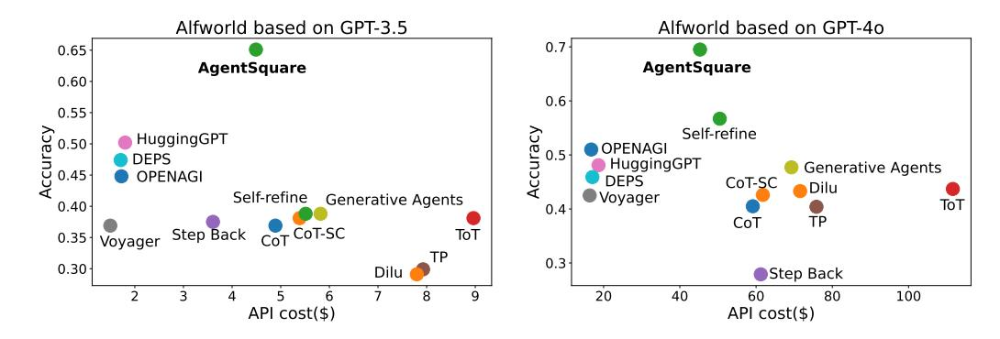
그림 A.7: ALFWorld 작업에서 성능과 API 비용 시각화
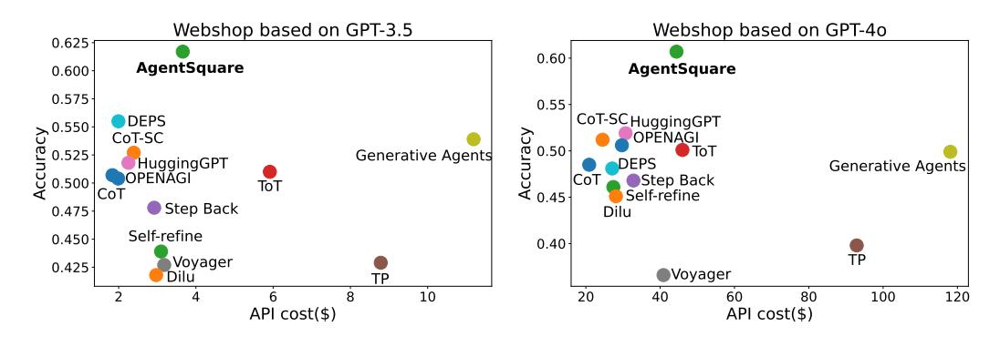
그림 A.8: 웹숍에서의 성능 대 API 비용 시각화
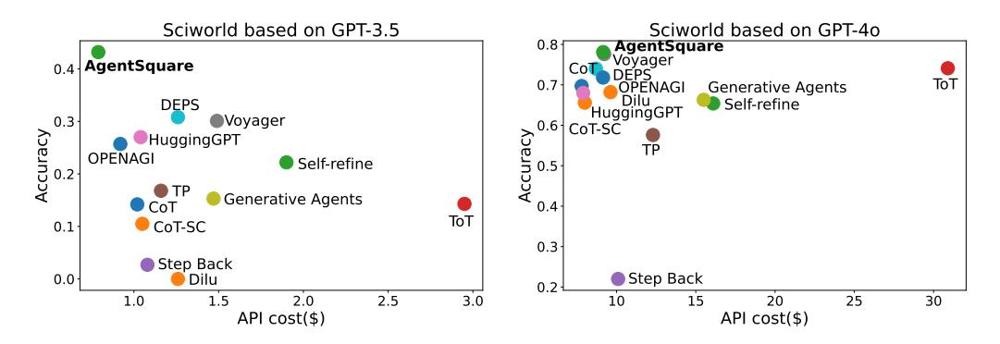
그림 A.9: Sciworld에서의 성능 대 API 비용 시각화
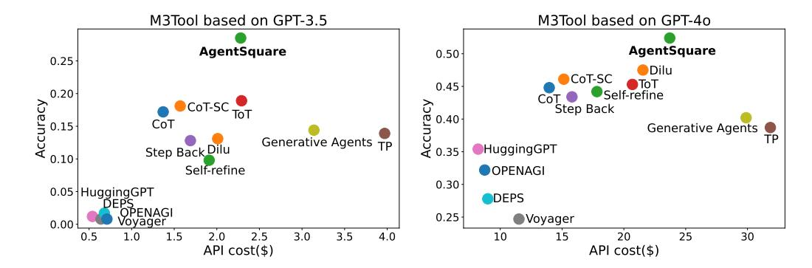
그림 A.10: M3tool에서의 성능 대 API 비용 시각화
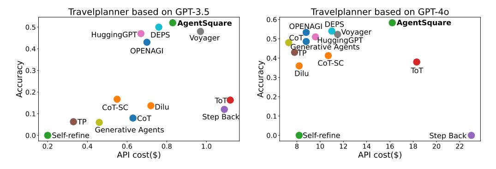
그림 A.11: Travelplanner에서 성능과 API 비용 시각화
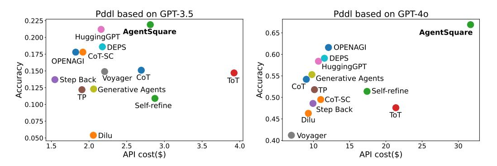
그림 A.12: PDDL에서 성능 대 API 비용 시각화
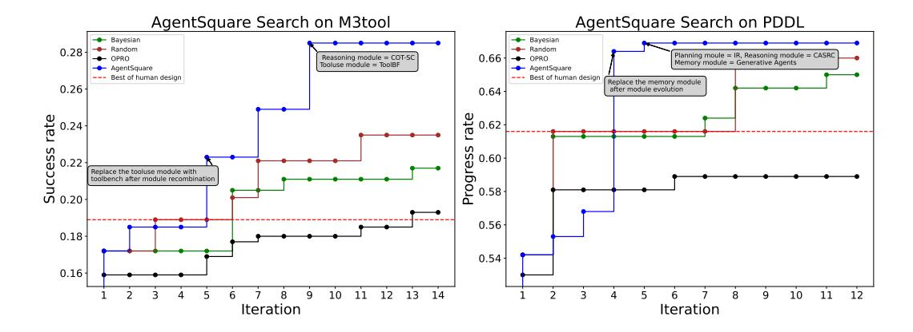
그림 A.13: M3tool 및 PDDL에서 AgentSquare 탐색 경로(최고 수작업 에이전트를 초과할 때 더 많은 수작업 에이전트와 특정 모듈 조합, 최종 진화된 에이전트, 기타 탐색 기준).
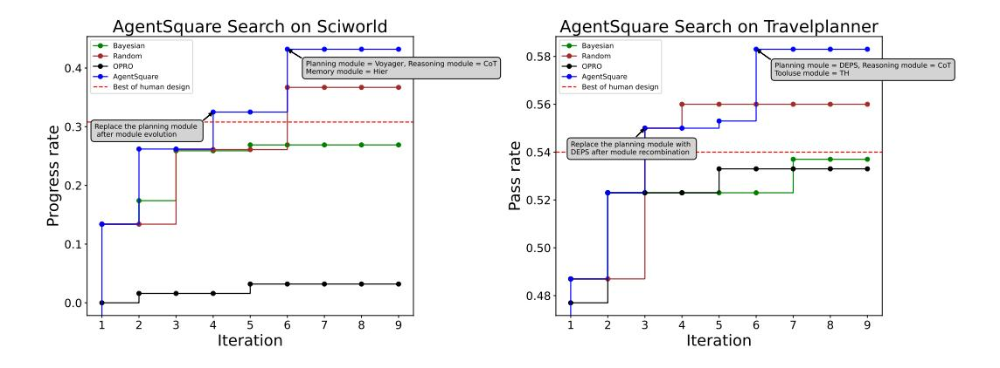
그림 A.14: Sciworld 및 Travelplanner에서 AgentSquare의 탐색 경로(최고의 수작업 에이전트를 초과할 때 더 많은 수작업 에이전트와 특정 모듈 조합, 최종 진화된 에이전트, 기타 탐색 기준 모델)
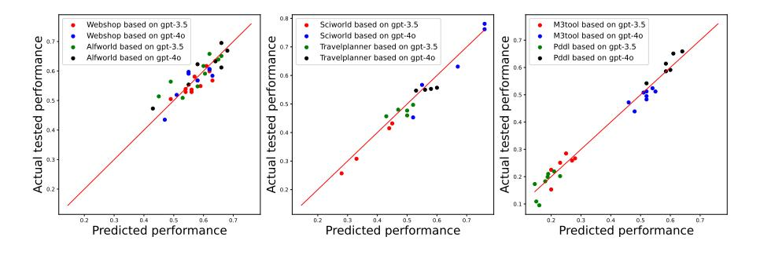
그림 A.15: 각 작업에 대해 동적으로 검색된 에이전트에 대한 성능 예측기의 유효성 검증
HTSS
설 insights: 현재 추론 모듈의 성능을 살펴보면, 체인 오브 씨트(Chain-of-Thought, CoT)와 트리 오브 씨트(Tree-of-Thoughts, ToT)와 같은 기술이 작업을 작은 단계로 나누고 여러 추론 경로를 평가함으로써 개선을 가져왔습니다. 또한 셀프 콘시스텐시(Self-Consistency, SC) 접근법은 여러 답변을 생성하고 그 중에서 투표를 통해 선택하는 방식으로 유망성을 보이고 있으며, 셀프 라이프(Self-Refine) 모듈은 피드백을 기반으로 반복적으로 개선하는 방식을 사용합니다. 전반적인 아이디어: 성능을 더욱 향상시키기 위해 이러한 기술들을 하나의 모듈에 통합할 수 있습니다. 구체적으로 트리 오브 씨트(ToT) 접근법을 셀프 콘시스텐시(SC)와 셀프 라이프(Self-Refine)와 결합할 수 있습니다. 이 통합 접근법은 여러 추론 경로를 생성하고, 그 중에서 최선의 경로를 선택하기 위해 평가한 후, 선택된 경로를 피드백을 기반으로 반복적으로 개선하는 방식을 포함합니다.
구현: 1. 다중 추론 경로 생성: 트리 오브 써츠(Tree-of-Thoughts, ToT) 접근법을 사용하여 여러 추론 경로를 생성합니다.
2. 최적 경로 평가 및 선택: 자기 일관성(Self-Consistency, SC)을 사용하여 이 경로들을 평가하고, 가장 흔하거나 정확한 경로를 선택합니다.
3. 선택된 경로 개선: 자기 개선(Self-Refine)을 사용하여 피드백을 기반으로 선택된 경로를 반복적으로 개선합니다.
4. 프롬프트 구조: 단계별 문제 해결을 유도하고, 유사한 해결된 예제를 참조하며, 피드백을 기반으로 출력을 개선하도록 설계된 프롬프트를 작성합니다.
그림 A.16: Webshop에서 AgentSquare 검색을 통해 발견된 새로운 모듈
계층
검토 중인 컨퍼런스 논문, ICLR 2025
설 insights: 제안된 메모리 모듈의 계층 구조는 지능형 에이전트의 작업 관리에 큰 이점을 제공한다. 각 작업을 별도로 저장된 더 작은 하위 작업으로 분할함으로써, 시스템은 집중적인 정보 검색을 가능하게 하여 에이전트가 전체 작업 트래잭션을 뒤져야 하는 대신 관련 데이터만 접근할 수 있게 한다.
전체적인 아이디어: 제안하는 메모리 모듈은 계층적인 메모리 구조를 만들고, 각 작업을 더 작은 하위 작업으로 나누어 각 하위 작업을 별도로 저장하는 데 중점을 둘 것입니다. 이러한 접근 방식은 에이전트가 전체 작업 트레이잭션보다는 특정 하위 작업에 대한 집중된 정보를 검색할 수 있게 해줍니다. 또한 이 메모리 모듈은 시간이 지남에 따라 메모리의 관련성과 정확성을 향상시키기 위한 피드백 메커니즘을 포함할 것입니다.
구현: 구현은 메모리 모듈을 수정하여 하위 작업 트랙터리를 저장하고 검색할 수 있도록 하며, 지속적인 개선을 위한 피드백 루프를 도입하는 것을 포함합니다.
그림 A.17: Sciworld에서 AgentSquare 검색을 통해 발견된 새로운 모듈
ToolBF
통찰: 이전에 발견된 아키텍처들은 여러 번의 상호작용이나 가장 적합한 도구를 식별하기 위한 여러 시도를 활용함으로써 성능을 향상시킬 수 있음을 보여준다(예: Toolformer). 또한, 벡터 유사도 기반 접근법을 사용하여 가장 관련성이 높은 도구를 검색하는 방식(예: Toolbench)은 유망해 보인다.
전체적인 아이디어: 벡터 유사도 접근 방식과 다중 시도를 결합하여 최적의 도구를 선택할 확률을 극대화하는 것을 제안합니다. 구체적으로, Toolbench 접근 방식을 보완하여 LLM에 여러 번 호출하여 여러 가지 가능한 해결책을 생성한 후, 투표 메커니즘을 통해 최선의 것을 선택합니다.
구현: 구현은 지시사항과 API 문서를 벡터 표현으로 변환하고, 가장 관련성이 높은 API를 검색한 후, LLM을 사용하여 여러 응답을 생성한 다음, 투표 메커니즘을 통해 최상의 응답을 선택하는 과정을 포함합니다.
그림 A.18: M3tool에서 AgentSquare 검색을 통해 발견된 새로운 모듈
TH
인사이트: 현재 탐색된 아키텍처 중에서 ‘Toolformer’ 접근 방식이 0.56의 가장 높은 성능을 보였으며, 이는 여러 후보 응답을 생성한 후 가장 좋은 것을 투표로 선택하는 것이 효과적임을 시사한다. 또 다른 관찰은 ’Anytool’에서처럼 계층적 검색 접근 방식이 작업에 따라 도구를 더 잘 분류하고 선택하는 데 도움이 될 수 있다는 점이다.
전체적인 아이디어: 계층적 검색 전략을 후보 응답 생성 및 투표 방법과 결합하겠습니다. 이는 먼저 작업 설명에 따라 도구를 분류한 후 여러 후보 응답을 생성하여 최적의 것을 선택하는 방식을 포함합니다. 이는 두 방법의 강점을 활용할 것입니다.
구현: 도구는 계층적 검색 전략을 사용하여 먼저 선택된 후, 선택된 도구에 대해 여러 응답이 생성되며, 이후 투표 메커니즘을 통해 최적의 응답을 식별합니다.
그림 A.19: Travelplanner에서 AgentSquare 검색을 통해 발견된 새로운 모듈
CASRC
통찰: 현재의 접근 방식은 직접적 추론, 단계별 추론(체인 오브 씨트), 그리고 자기 개선 기술을 탐색해 왔다. 특히 ‘체인 오브 씨트’와 ’셀프 라인드’ 방법은 작업을 분해하고 반복적으로 해결책을 개선함으로써 잠재력을 보여주었다. 그러나 이러한 노력에도 불구하고 성능은 여전히 50~55% 수준에 머물러 있어 개선 여지가 있음을 시사한다.
전체적인 아이디어: 성능을 더욱 향상시키기 위해, 고성능 방법들(체인 오브 씨트와 셀프리파인)의 요소들을 결합하고 새로운 초점(예: 모델의 반복적 검토 또는 지식 기반 피드백)을 추가하는 것을 제안합니다.
22 그림 A.20: Pddl에 대한 AgentSquare 검색을 통해 발견된 새로운 모듈
IR 작업
검토 중인 컨퍼런스 논문, ICLR 2025
아이디어: 에이전트의 ALFworld 작업에서 성능을 극대화하기 위해, 계획 과정에 피드백 루프와 반복적 개선을 통합해야 한다. 발견된 아키텍처를 통해, 가장 효과적인 모듈(DEPS 및 openagi)은 상세한 하위 목표를 제공하고 피드백 기반의 반복적 개선을 활용하는 것으로 보인다. 전반적인 아이디어: 다음 계획 모듈은 피드백을 포함한 반복적 계획에 초점을 맞출 것이다. 초기 하위 작업 세트를 생성한 후, 모듈은 LLM에 하위 작업의 의존성과 완전성을 명시적으로 점검하여 계획을 개선하도록 요청할 것이다. 구현: 초기 하위 작업 세트를 생성한 후 피드백을 기반으로 개선하는 계획 모듈을 구현할 것이다. 이 개선 과정을 통해 하위 작업이 일관성 있고, 최소화되며, 완전해지도록 하여 순차적 의사결정에서 더 나은 성능을 보장할 것이다.
그림 A.21: Pddl에서 AgentSquare 검색을 통해 발견된 새로운 모듈